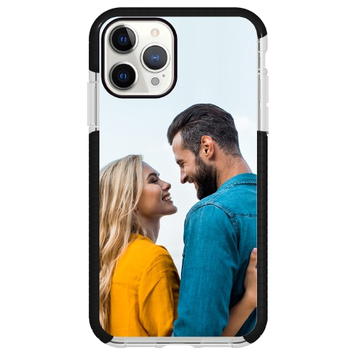

Our team was founded in 2019 after the iPhone X was released in California. Over the years, we have had over 50 new members join.
In 2019, our company wanted to build the best phone cases there are by manufacturing an idea of an invincible phone case. This case didn't sell well at first because of competition from Otterbox, another phone case brand. This caused our case not to do as well, and our business lost value. Because of this, we decided to add customizability to our cases, which Otterbox could not compete with. As a result, we were able to save our business and recover from our losses.
We understood t hat phone cases must be unique and creative to sell well. Our team had an idea to make a phone case that changes color at the start. That phone case made our business skyrocket, and after that, we wanted our cases to have the same unique effect and creativity that represent people, but make them even more personal. We used all the information we had to create a phone case that offers more personalized customization. This phone case uses an NFC tag on the back of your phone to make the back display an image of your choice. This feature is seamless and very personal. It’s like magic. Our phone cases have now made us millions, and they have been the 4-year in a row award-winning phone case from CNET. We can’t wait to make brighter versions that last longer and offer more protection. We look forward to delivering these custom phone cases to you.
